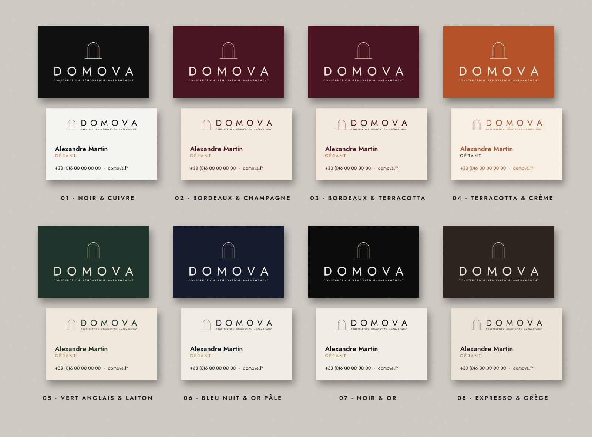
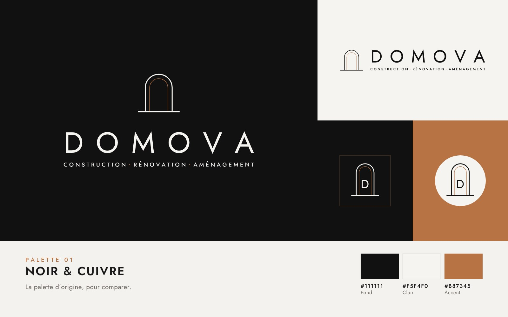
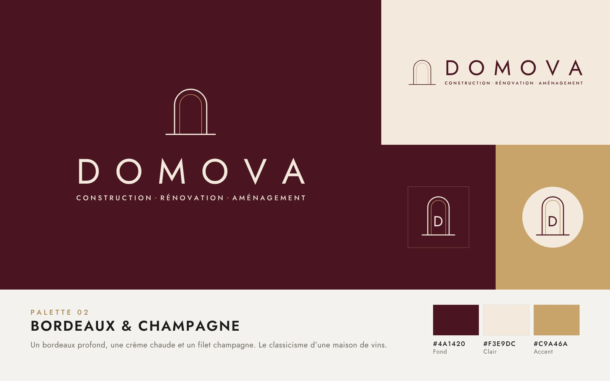
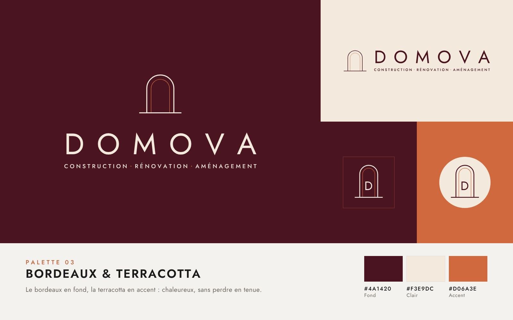
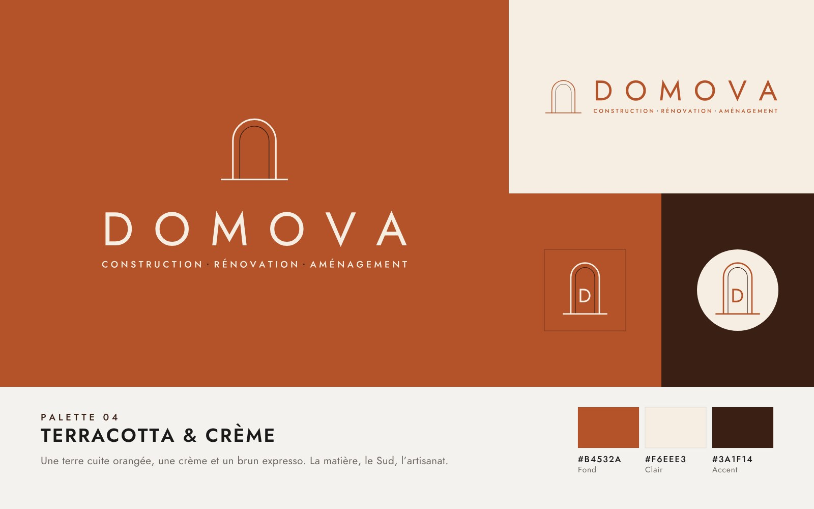
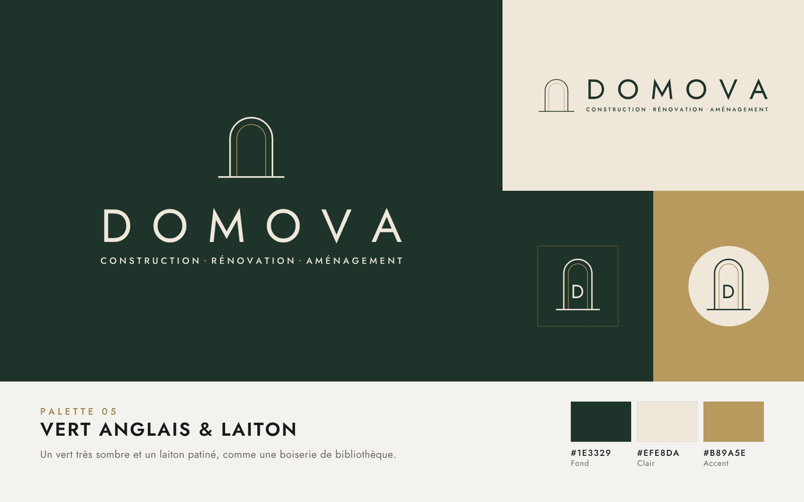
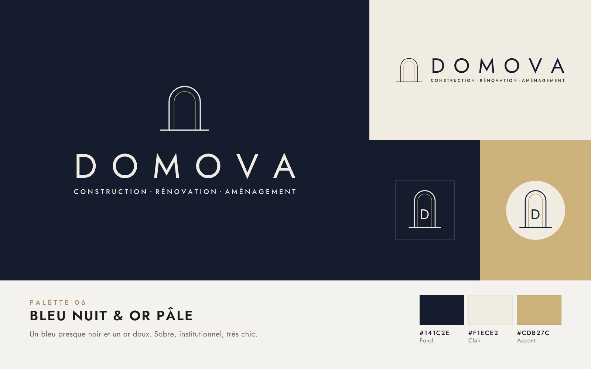
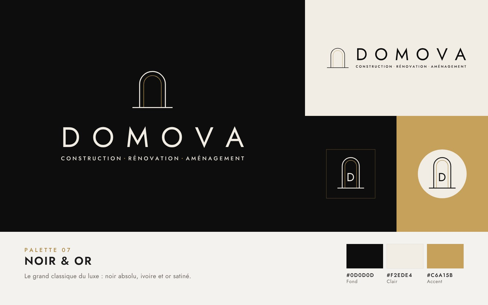

<title>DOMOVA L’Arche</title>
<meta name="claude:viewport-fit-sides" content="cover">
<link rel="stylesheet" href="https://fonts.googleapis.com/css2?family=Jost:wght@400;500;600&family=JetBrains+Mono:wght@400&display=swap">
<style>
/* Layout: comparison sheet first, then one palette per row with notes beside it */
:root{--bg:#F4F2EE;--fg:#1A1A1A;--muted:#6A665F;--line:rgba(26,26,26,.12);--accent:#8E3B2B;
--f:"Jost","Futura","Century Gothic",system-ui,sans-serif;--m:"JetBrains Mono",ui-monospace,Menlo,monospace;color-scheme:light}
*{box-sizing:border-box}
body{margin:0;background:var(--bg);color:var(--fg);font-family:var(--f);font-size:17px;line-height:1.6}
main{max-width:1240px;margin:0 auto;padding-left:max(16px,env(safe-area-inset-left,0px));padding-right:max(16px,env(safe-area-inset-right,0px));padding-block:clamp(48px,8vw,96px);display:grid;gap:56px}
header{display:grid;gap:14px}
.eyebrow,.num{font-family:var(--m);font-size:12px;letter-spacing:.2em;text-transform:uppercase;color:var(--accent)}
h1{font-weight:600;font-size:clamp(30px,4.5vw,48px);line-height:1.1;margin:0;text-wrap:balance}
h2{font-weight:600;font-size:24px;margin:0;letter-spacing:.02em}
p{margin:0;max-width:62ch}
.lede{color:var(--muted);font-size:19px}
figure{margin:0;display:grid;gap:10px} figure img{width:100%;display:block} figcaption{color:var(--muted);font-size:15px}
article{display:grid;grid-template-columns:minmax(0,2fr) minmax(0,1fr);gap:32px;align-items:start;padding-top:32px;border-top:1px solid var(--line)}
article img{width:100%;display:block}
.txt{display:grid;gap:12px}
.chips{display:flex;flex-wrap:wrap;gap:8px 16px;font-family:var(--m);font-size:12.5px;color:var(--muted)}
.chips span{display:inline-flex;align-items:center;gap:8px}
.chips i{width:18px;height:18px;display:inline-block;border:1px solid var(--line)}
footer p{color:var(--muted)}
@media (max-width:860px){article{grid-template-columns:minmax(0,1fr)}}
</style>
<main>
<header><span class="eyebrow">DOMOVA · Logo L’Arche · Essais de couleurs</span>
<h1>Huit palettes pour l’Arche</h1>
<p class="lede">Même logo, huit ambiances : bordeaux, terracotta, et des associations classiques du luxe (laiton, or, bronze). La palette noir et cuivre d’origine sert de référence.</p></header>
<figure><figcaption>Le même jeu de cartes de visite dans les huit palettes : c’est le test le plus parlant pour choisir.</figcaption></figure>
<article><div class="txt"><span class="num">Palette 01</span><h2>Noir & cuivre</h2><p>La palette d’origine, pour comparer.</p><div class="chips"><span><i style="background:#111111"></i>#111111</span><span><i style="background:#F5F4F0"></i>#F5F4F0</span><span><i style="background:#B87345"></i>#B87345</span></div></div></article><article><div class="txt"><span class="num">Palette 02</span><h2>Bordeaux & champagne</h2><p>Un bordeaux profond, une crème chaude et un filet champagne. Le classicisme d’une maison de vins.</p><div class="chips"><span><i style="background:#4A1420"></i>#4A1420</span><span><i style="background:#F3E9DC"></i>#F3E9DC</span><span><i style="background:#C9A46A"></i>#C9A46A</span></div></div></article><article><div class="txt"><span class="num">Palette 03</span><h2>Bordeaux & terracotta</h2><p>Le bordeaux en fond, la terracotta en accent : chaleureux, sans perdre en tenue.</p><div class="chips"><span><i style="background:#4A1420"></i>#4A1420</span><span><i style="background:#F3E9DC"></i>#F3E9DC</span><span><i style="background:#D06A3E"></i>#D06A3E</span></div></div></article><article><div class="txt"><span class="num">Palette 04</span><h2>Terracotta & crème</h2><p>Une terre cuite orangée, une crème et un brun expresso. La matière, le Sud, l’artisanat.</p><div class="chips"><span><i style="background:#B4532A"></i>#B4532A</span><span><i style="background:#F6EEE3"></i>#F6EEE3</span><span><i style="background:#3A1F14"></i>#3A1F14</span></div></div></article><article><div class="txt"><span class="num">Palette 05</span><h2>Vert anglais & laiton</h2><p>Un vert très sombre et un laiton patiné, comme une boiserie de bibliothèque.</p><div class="chips"><span><i style="background:#1E3329"></i>#1E3329</span><span><i style="background:#EFE8DA"></i>#EFE8DA</span><span><i style="background:#B89A5E"></i>#B89A5E</span></div></div></article><article><div class="txt"><span class="num">Palette 06</span><h2>Bleu nuit & or pâle</h2><p>Un bleu presque noir et un or doux. Sobre, institutionnel, très chic.</p><div class="chips"><span><i style="background:#141C2E"></i>#141C2E</span><span><i style="background:#F1ECE2"></i>#F1ECE2</span><span><i style="background:#CDB27C"></i>#CDB27C</span></div></div></article><article><div class="txt"><span class="num">Palette 07</span><h2>Noir & or</h2><p>Le grand classique du luxe : noir absolu, ivoire et or satiné.</p><div class="chips"><span><i style="background:#0D0D0D"></i>#0D0D0D</span><span><i style="background:#F2EDE4"></i>#F2EDE4</span><span><i style="background:#C6A15B"></i>#C6A15B</span></div></div></article><article><div class="txt"><span class="num">Palette 08</span><h2>Expresso & grège</h2><p>Un brun expresso, une grège minérale et un bronze. Doux, naturel, très intérieur.</p><div class="chips"><span><i style="background:#2E2420"></i>#2E2420</span><span><i style="background:#E9E2D6"></i>#E9E2D6</span><span><i style="background:#A27B4F"></i>#A27B4F</span></div></div></article>
<footer><p>Choisissez une palette, ou une combinaison (par exemple le bordeaux en couleur principale et la terracotta pour le chantier). Je refais ensuite toute l’identité avec : logos SVG, PDF et PNG, icônes et mises en situation.</p></footer>
</main>